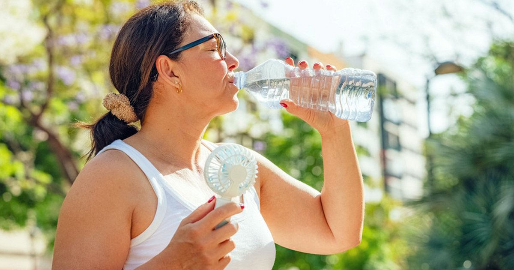

A few years ago, my uncle called me from the emergency room. His voice was tight, like he was trying not to scream. “Jordan,” he said, “I think I’m dying.” He wasn’t dying. He was passing a kidney stone. A 4‑millimeter calcium oxalate stone that felt like a tiny serrated knife traveling from his kidney to his bladder. He told me later it was worse than the time he broke his leg. Worse than kidney stones. That’s saying something. He had no idea he was at risk. He drank maybe four cups of fluid a day, mostly coffee. He ate spinach salads daily because he thought they were healthy. He took calcium supplements for his bones. He lived in Georgia, where the heat made him sweat more than he realized. All of those things together — low fluid, high oxalate, high calcium, hot climate — created the perfect storm for stones. After his stone passed (and after he stopped crying), I sat down with him and built a hydration plan to prevent another one. He’s been stone‑free for three years. He now drinks 3.5 liters (118 ounces) of fluid every day, adds lemon juice to his water, and eats his spinach with yogurt to bind the oxalates. He says he never wants to feel that pain again. Kidney stones are more common than you think. About one in ten people will get a stone in their lifetime. And the single most important preventive factor is fluid intake. Not diet, not supplements, not medications. Fluid. Because stones form when your urine becomes too concentrated with minerals like calcium, oxalate, and uric acid. Dilute urine means crystals can’t stick together. The target for stone prevention is at least 2.5 liters (85 ounces) of urine output per day. Not fluid intake — urine output. Because some fluid leaves your body through sweat and breathing, you need to drink more than 2.5 liters to produce that much urine. The general recommendation is 3 to 3.5 liters (101‑118 ounces) of total fluid per day for stone formers. My uncle was drinking about 1 liter (34 ounces). That’s why his urine was dark amber every morning. He was chronically concentrated. The crystals had years to grow. Step one is to set your fluid goal. If you’ve had a stone, aim for 3.5 liters (118 ounces) per day. If you’re at high risk — family history, hot climate, certain medical conditions — aim for 3 liters (101 ounces). Use a marked bottle to track. I recommend a 1‑liter bottle. Finish one by breakfast, one by lunch, one by dinner, and another half by bedtime. Step two is to measure your urine color. Pale straw is the goal. Dark yellow means you’re not drinking enough. Amber means you’re in the danger zone. Morning urine is always darker, so check your second or third void of the day. Step three is to add citrate. Citrate binds to calcium in the urine, preventing it from forming crystals with oxalate or phosphate. The best source is lemon or lime juice. A half cup (120 mL) of fresh lemon juice per day can raise urinary citrate significantly. My uncle now squeezes half a lemon into his 1‑liter morning bottle. He says he’s used to the taste. Orange juice also works, but it has more sugar and calories. Lemon juice is almost calorie‑free. Step four is to manage oxalate. High‑oxalate foods include spinach, beets, nuts, chocolate, tea, and wheat bran. You don’t need to avoid them completely, but you should eat them with calcium‑rich foods. The calcium binds to oxalate in your gut, so it doesn’t get absorbed and end up in your urine. Spinach with cheese, nuts with yogurt, chocolate with milk. That’s the pairing principle. My uncle was eating a spinach salad every day with no calcium. The oxalate was being absorbed and excreted into his urine, where it found his high urinary calcium (from supplements) and formed crystals. We cut his spinach to twice a week and added a daily serving of dairy. His urinary oxalate dropped by 40%. Step five is to watch your sodium. High sodium intake increases calcium excretion in urine. More calcium in urine means more chance of stones. The recommendation is less than 2,300 mg of sodium per day. For stone formers, some urologists recommend less than 1,500 mg. That’s hard to do if you eat processed foods, but it’s possible. My uncle stopped adding salt to his food and switched to low‑sodium canned beans. His urinary calcium dropped significantly. Step six is to get enough calcium from food, not supplements. This is counterintuitive. People think calcium causes stones. But dietary calcium actually reduces stone risk because it binds to oxalate in the gut. It’s calcium supplements that can increase risk, especially if taken between meals. My uncle was taking 1,000 mg of calcium citrate with breakfast. We switched him to getting calcium from dairy, and his stone risk profile improved. Step seven is to limit animal protein. High intake of animal protein makes urine more acidic and increases uric acid excretion. That can lead to uric acid stones. Red meat, poultry, fish, eggs — all contribute. My uncle loved steak. We cut him back to twice a week and replaced the other protein with beans and lentils. His uric acid level normalized. Step eight is the fluid schedule. Don’t chug 3.5 liters all at once. Spread it out. Drink a glass every hour. Keep a bottle on your desk, in your car, next to your bed. Drink a glass before every meal. Finish a liter by noon, another by 5 PM, and another by 9 PM. If you drink too much close to bedtime, you’ll be up all night peeing. That’s annoying but not dangerous. The type of fluid matters. Water is best. Coffee and tea are fine in moderation — they contain oxalate, but the fluid benefit outweighs the oxalate risk for most people. Citrus juices are excellent because of the citrate. Soda, especially cola, contains phosphoric acid, which can promote stones in some people. My uncle switched from Diet Coke to sparkling water with lemon. He says he doesn’t miss it. One more thing. If you sweat a lot — hot climate, exercise, manual labor — you need even more fluid. My uncle lives in Georgia and works outdoors. His sweat rate on a summer day is about 1 liter per hour. That means his fluid needs are higher than someone in a cool office. We added 500 mL for every hour of outdoor work. On a full workday, his total fluid sometimes hit 5 liters (169 ounces). That’s a lot, but his urine stayed pale and he never had another stone. I have a tool that calculates stone prevention fluid needs.Kidney Stone Prevention Fluid Planner
Enter your stone type (if known), climate, activity, and diet. Get a personalized fluid goal, citrate target, and dietary recommendations.
All data stays in your browser — we never see it.
Daily Water Intake Calculator
Set your baseline, then add the stone prevention adjustments.
All data stays in your browser — we never see it.
Hydration Goal Setter
Track your daily intake. Stone prevention is a long game. Streaks help.
All data stays in your browser — we never see it.